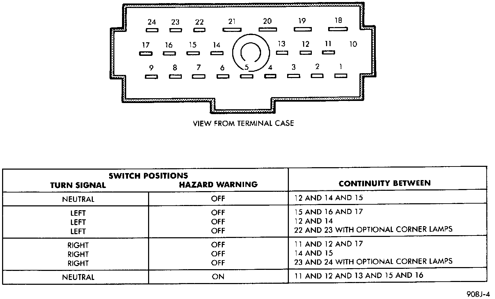

Hazard Warning Switch: Testing and Inspection
Perform the diagnosis of the hazard warning and/or turn signal systems as described before testing the multi-function switch.WARNING: ON VEHICLES EQUIPPED WITH AIRBAGS, REFER TO AIR BAGS AND SEAT BELTS/AIR BAGS BEFORE ATTEMPTING ANY STEERING WHEEL, STEERING COLUMN, OR INSTRUMENT PANEL COMPONENT DIAGNOSIS OR SERVICE. FAILURE TO TAKE THE PROPER PRECAUTIONS COULD RESULT IN ACCIDENTAL AIRBAG DEPLOYMENT AND POSSIBLE PERSONAL INJURY.
1. Unplug the multi-function switch wire harness connector as described.
Multi-Function Switch Continuity:

2. Using an ohmmeter, perform the switch continuity checks at the switch terminals as shown in the Multi-Function Switch Continuity chart.
3. If the switch fails any of the continuity checks, replace the faulty switch. If the switch is OK, repair the lighting circuits as required.